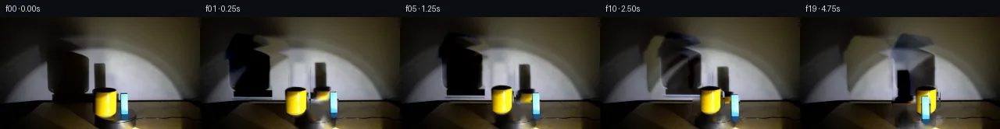

![首帧]()

Round 00
2026-11-05T00:47:35.737148+00:00像素候选变化代码 +272/−0inspection 更新
pixels 10849cbe5e127eba · code 11bae697f258a73e
查看本轮 generate.py 真实 diff
--- previous/generate.py +++ current/generate.py @@ -0,0 +1,272 @@ +#!/usr/bin/env python3 +"""Generate the 20-frame PixelWorld continuation from first_frame.png. + +The implementation is deliberately local and deterministic. It extracts the two +foreground props from frame zero, reconstructs the small occluded areas and the +wall behind their shadows, and composites the props along perspective ellipses. +""" + +from pathlib import Path +import math + +import cv2 +import numpy as np +from PIL import Image, ImageDraw, ImageFont + +import artifact_io + + +ROOT = Path(__file__).resolve().parent +W, H = 256, 144 + + +def soft_mask(binary: np.ndarray, sigma: float = 0.8) -> np.ndarray: + a = cv2.GaussianBlur(binary.astype(np.float32), (0, 0), sigma) + return np.clip(a, 0.0, 1.0) + + +def make_object_masks() -> tuple[np.ndarray, np.ndarray]: + """Hand-fit silhouettes measured from the source, including mug handle.""" + mug = np.zeros((H, W), np.uint8) + # Cup bowl and lip. + cv2.ellipse(mug, (135, 96), (14, 5), 0, 0, 360, 255, -1, cv2.LINE_AA) + cv2.fillPoly( + mug, + [np.array([(121, 96), (149, 96), (148, 119), (144, 127), + (129, 130), (123, 126)], np.int32)], + 255, + cv2.LINE_AA, + ) + cv2.ellipse(mug, (136, 124), (10, 6), -6, 0, 180, 255, -1, cv2.LINE_AA) + # Ring-shaped handle on the right. The center stays transparent. + cv2.ellipse(mug, (148, 109), (7, 10), 0, -82, 82, 255, 4, cv2.LINE_AA) + mug = soft_mask(mug / 255.0, 0.55) + + block = np.zeros((H, W), np.uint8) + cv2.fillConvexPoly( + block, + np.array([(154, 99), (161, 98), (164, 103), (164, 128), + (159, 131), (154, 127)], np.int32), + 255, + cv2.LINE_AA, + ) + block = soft_mask(block / 255.0, 0.5) + return mug, block + + +def extract_sprite(src: np.ndarray, alpha: np.ndarray, bbox: tuple[int, int, int, int]): + x0, y0, x1, y1 = bbox + return src[y0:y1, x0:x1].copy(), alpha[y0:y1, x0:x1].copy() + + +def reconstruct_clean_plate(src: np.ndarray, mug_a: np.ndarray, block_a: np.ndarray): + """Remove source props and recover the spotlight under source shadows.""" + clean = src.astype(np.float32).copy() + + # A clean estimate of the spotlight is available by reflecting unshadowed + # pixels from the right half about the measured light center x=146. + yy, xx = np.indices((H, W)) + mirror_x = np.clip(292 - xx, 0, W - 1) + reflected = src[yy, mirror_x].astype(np.float32) + lum = src.astype(np.float32).mean(axis=2) + rlum = reflected.mean(axis=2) + + candidate = ( + (yy < 110) & (xx >= 48) & (xx <= 140) & + (rlum > 48) & (lum < rlum * 0.78) + ).astype(np.uint8) + # Constrain the automatic comparison to the two measured shadow regions. + region = np.zeros((H, W), np.uint8) + cv2.fillPoly(region, [np.array([(52, 22), (116, 31), (118, 110), + (47, 110)], np.int32)], 1) + cv2.rectangle(region, (117, 53), (138, 106), 1, -1) + shadow_core = candidate & region + shadow_core = cv2.morphologyEx(shadow_core, cv2.MORPH_CLOSE, + np.ones((5, 5), np.uint8)) + shadow_core = cv2.morphologyEx(shadow_core, cv2.MORPH_DILATE, + np.ones((3, 3), np.uint8)) … diff truncated; 185 more lines …